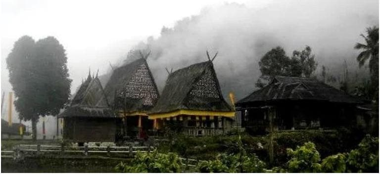
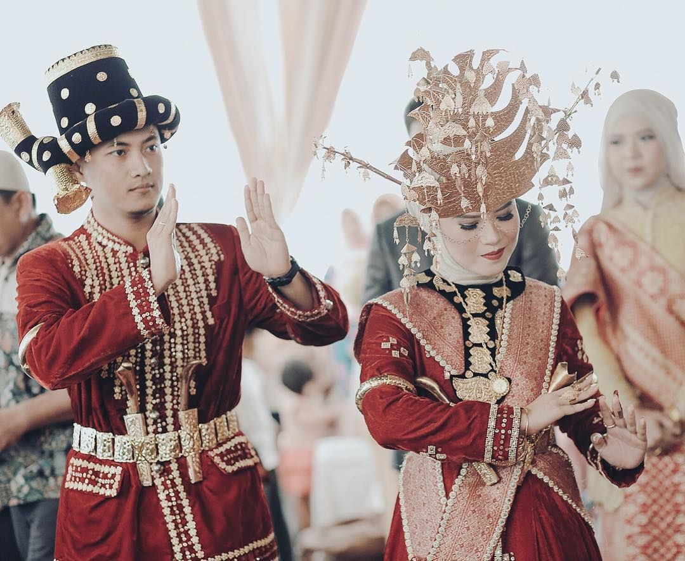
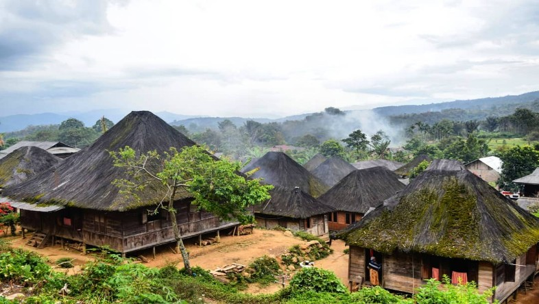

Sejarah

Dalam sejarah Mandailing Natal disebutkan bahwa mandailing berasal dari nama sebuah kerajaan yang ada jauh sebelum abad ke-12. kerajaan ini terbendang dari daerah Padang Lawas hingga bagian selatan Provinsi Sumatera barat yang kini masuk dalam wilayah Tapanuli Bagian Selatan. Nama Mandailing berasal dari kata Mandala-Holing, yang dikaitkan dengan sebuah ungkapan dalam adat setempat. Ungkapan itu berbunyi Surat tumbaga holing naso ra sasa
yang memiliki arti "aturan adat yang tidak bsa dihapus".
Sebelum Mandailing Natal menjadi sebuah kabupaten, wilayah ini masih termasuk Kabupaten Tapanuli Selatan. Setelah terjadi pemekaran, dibentuklah Kabupaten Mandailing Natal secara resmi berdasarkan Undang-undang Nomor 12 tahun 1998, tentang pembentukan Kabupaten Daerah Tingkat II Toba Samosir dan Kabupaten Daerah Tingkat II Mandailing Natal yang secara formal diresmikan oleh Menteri Dalam Negeri pada tanggal 23 November 1998. Hari jadi Kabupaten Mandailing Natal diperingati setiap tanggal 9 Maret.
Di awal terbentuknya, Kabupaten Mandailing Natal hanya terdiri dari delapan kecamatan yang terbagi menjadi 273 desa. Selanjutnya pada tahun 2002 keluar perda yang membentuk 17 kecamatan yang terbagi dalam 322 desa serta tujuh kelurahan. Di tahin 2007 Kabupaten Mandailing Natal kembeli membentuk kecamatan baru sehingga wilayahnya memiliki 23 kecacmatan dengan 353 desa dan 32 kelurahan.
Suku

Penduduk wilayah Kabupaten Mandailing Natal didominasi oleh suku Mandailing yang secara bahasa, adat-istiadat, dan budaya merupakan bagian dari subsuku/puak/cabang etnis dari suku Batak. Suku Mandailing sering disebut sama dengan Angkola, meski sebenarnya keduanya masih berbeda, tetapi kebanyakan adalah sama, mulai dari bahasa yang sangat mirip, baju adat pernikahan, dan rumah adat. Demikian juga halnya dengan marga, orang Angkola dan Mandailing sering disebutkan sebagai marga yang sama. Masyarakat etnis Batak Mandailing di kabupaten ini kebanyakan bermarga Nasution, Lubis, Pulungan, Harahap, Siregar, Rangkuti, dan Daulay.
Kemudian diikuti oleh suku Minangkabau yang banyak bermukim di daerah-daerah pesisir sejak masa lalu yang keturunannya sekarang lebih dikenal sebagai suku Pesisir dan Suku Ulu, ada pula suku lain seperti Melayu, dan juga Nias. Masyarakat Minangkabau banyak dijumpai di sekitar wilayah pesisir seperti Natal, Kotanopan, Panyabungan, serta wilayah yang berbatasan dengan Sumatera Barat. Orang Minang di Madina terlihat dari tidak adanya nama marga seperti orang Mandailing dan Nias.
Wisata
Wilayah Mandailing Natal menyimpan banyak keindahan dan tempat menarik untuk dikunjungi. Bukan hanya pantai dan pulau saja, wilayah ini juga memiliki beberapa objek wisata lain, baik berupa bangunan yang bersejarah maupun objek wisata alam yang sangat memukau dan menjadi tujuan warga lokal maupun dari luar wilayah.
Air Panas Sibanggor

Destinasi wisata ini menawarkan objek wisata yang sangat indah sekaligus unik. Karena air panasnya memiliki kandungan yang baik untuk kesehatan. Banyak orang yang datang ke tempat ini hanya untuk berendam air panas saja. Konon, air panas ini dapat menyembuhkan segala macam penyakit.
Budaya lokal masih melekat kental terlihat jelas dari berdirinya rumah-rumah adat beratap ijuk yang sekaligus menjadi tempat tinggal warga di lereng kaki gunung Sorik Marapi sehingga menambah daya tarik tempat ini.
Bagas Godang
Bagas Godang merupakan rumah berarsitektur Batak Mandailing dengan konstruksi yang khas. Berbentuk empat persegi panjang yang disangga kayu-kayu besar berjumlah ganjil. Ruang terdiri dari ruang depan, ruang tengah, ruang tidur, dan dapur. Terbuat dari kayu, berkolong dengan tujuh atau sembilan anak tangga, berpintu lebar dan berbunyi keras jika dibuka. Kontruksi atap berbentuk tarup silengkung dolok, seperti atap pedati. Satu komplek dengan Bagas Godang terdapat Sopo Godang, Sopo Gondang, Sopo Jago, dan Sopo Eme.